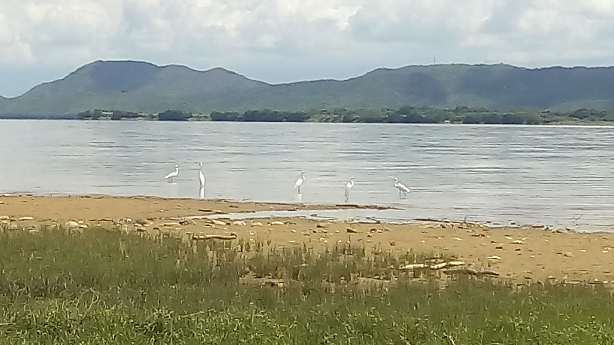
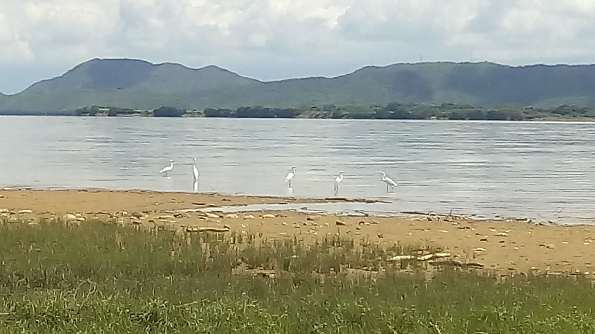
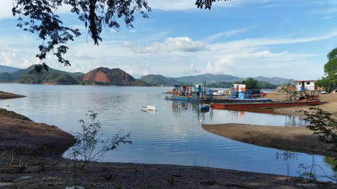
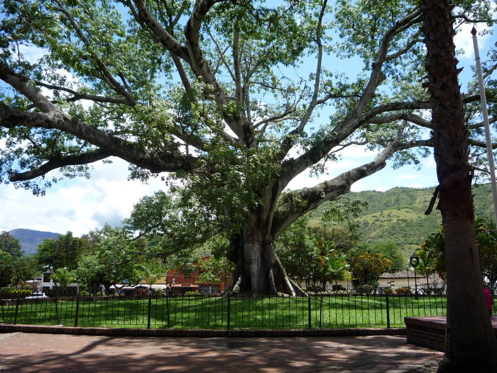

Sitios turísticos del Huila
Imágenes de atractivos turisticos naturales.
La naturaleza es lo más importante dentro del Departamento, pues son lugares que no se pueden repetir, ya que no son hechos por el hombre.
Este parrafo esta dentro de div
Imágenes de atractivos turisticos naturales.
La naturaleza es lo más importante dentro del Departamento, pues son lugares que no se pueden repetir, ya que no son hechos por el hombre.
Puerto de Yaguará
El llenado de la represa depende de la época de lluvias o sequías lo que afecta la pesca artesanal.
Árbol de la Ceiba
El árbol ya no existe, pero duró mas o menos 200 años, también conocido como la Ceila de la Libertad.